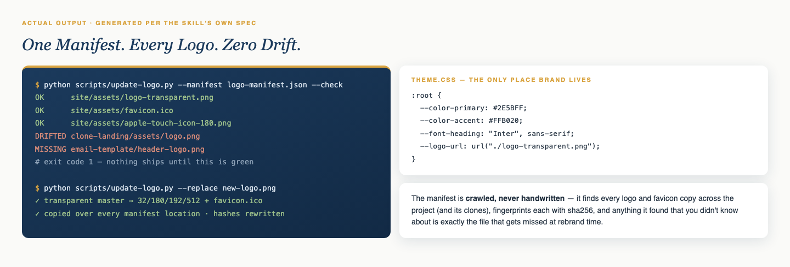

One Token File.
Every color, font, radius, and the logo itself live in a single theme.css as CSS variables. Pages consume tokens — inline hex codes are treated as bugs and hunted down with grep.
Standalone Skill
AI site builders scatter hex codes across pages and paste logos into random folders. Then the brand changes and updating the site becomes a scavenger hunt. This skill ends that — one token file, one manifest, one command to replace everything.

The problem it kills
Some files get replaced, some don't, and nobody notices the missed ones until a customer does. This skill makes that failure structurally impossible.
Every color, font, radius, and the logo itself live in a single theme.css as CSS variables. Pages consume tokens — inline hex codes are treated as bugs and hunted down with grep.
Every copy of your logo and favicon set — across the project and its clones — crawled, cataloged, and sha256-fingerprinted. The crawler finds files you forgot existed.
--check prints OK, MISSING, or DRIFTED per file and fails the build if anything's wrong. --replace regenerates the whole set — transparent master, four PNG sizes, multi-size favicon — and writes it over every location in one command.
Details that matter
Dry-run by default. Explicit background keying when your logo isn't on white. Git commits if you ask — never pushes. And honest fallbacks when the environment is constrained.
--dry-run shows exactly what a replace would touch before it touches anything.
favicon.ico, 32px, apple-touch-180, 192, 512 — generated, not hand-cropped — plus Organization JSON-LD so search engines get the canonical logo.
Constrained agents get the manual route spelled out — and the skill never claims a replace it couldn't execute.
Get started
Clone it, crawl your project once, and never hunt a stray hex code again.
$ git clone https://github.com/MyAiFreedomSystems/logo-theme-manager.git
# drop the folder in your agent's skills directory. done.
The next logo swap is either one command or a scavenger hunt. Pick.
Get Logo-Theme-Manager On GitHub →